Aula 02 Primeiros passos no ambiente de programação
Arquivo original: Aula 02 Primeiros passos no ambiente de programação.pdf
Página 1
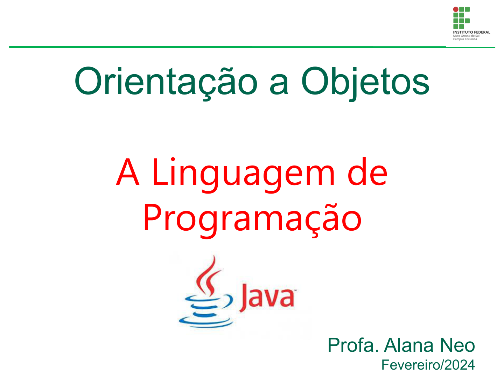
Orientação a Objetos
A Linguagem de Programação
Profa. Alana Neo
Fevereiro/2024Página 2
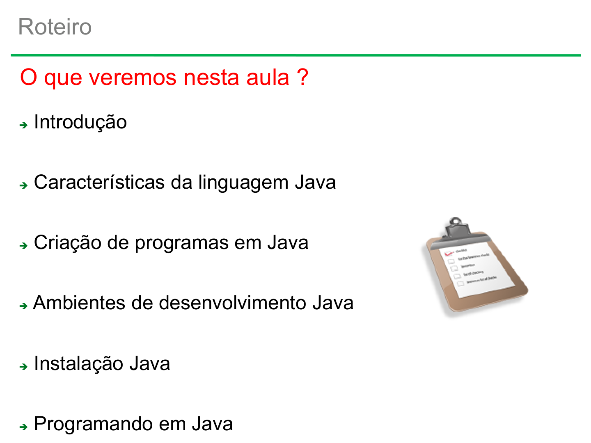
Roteiro
O que veremos nesta aula ?
Introdução
Características da linguagem Java
Criação de programas em Java
Ambientes de desenvolvimento Java
Instalação Java
Programando em Java
Página 3
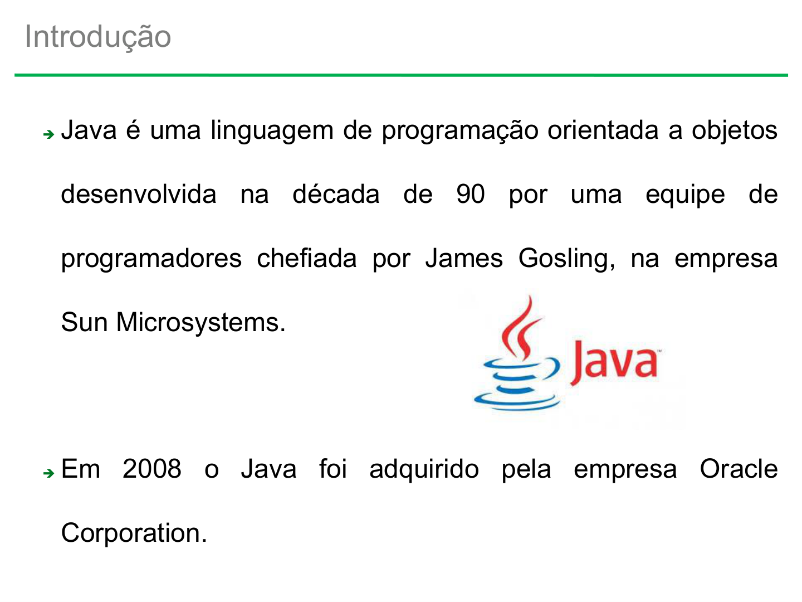
Introdução
Java é uma linguagem de programação orientada a objetos
desenvolvida na década de 90 por uma equipe de
programadores chefiada por James Gosling, na empresa
Sun Microsystems.
Em 2008 o Java foi adquirido pela empresa Oracle
Corporation.
Página 4
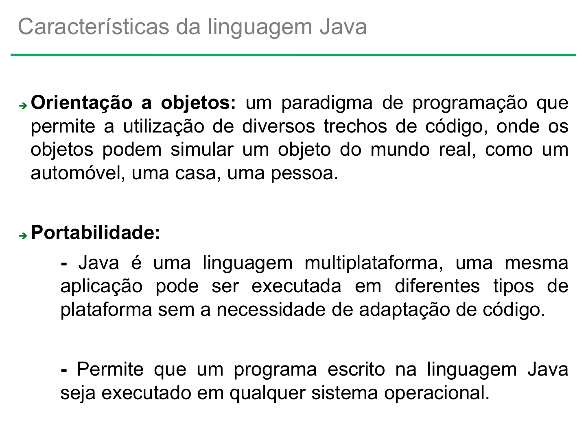
Características da linguagem Java
Orientação a objetos: um paradigma de programação que permite a utilização de diversos trechos de código, onde os objetos podem simular um objeto do mundo real, como um automóvel, uma casa, uma pessoa.
Portabilidade: - Java é uma linguagem multiplataforma, uma mesma aplicação pode ser executada em diferentes tipos de plataforma sem a necessidade de adaptação de código.
- Permite que um programa escrito na linguagem Javaseja executado em qualquer sistema operacional.
Página 5
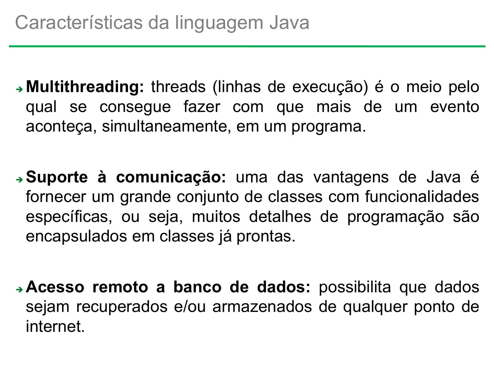
Características da linguagem Java
Multithreading: threads (linhas de execução) é o meio pelo qual se consegue fazer com que mais de um evento aconteça, simultaneamente, em um programa.
Suporte à comunicação: uma das vantagens de Java é fornecer um grande conjunto de classes com funcionalidades específicas, ou seja, muitos detalhes de programação são encapsulados em classes já prontas.
Acesso remoto a banco de dados: possibilita que dados sejam recuperados e/ou armazenados de qualquer ponto de internet.
Página 6
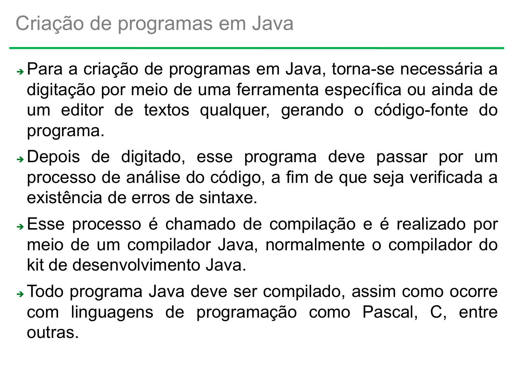
Criação de programas em Java
- Para a criação de programas em Java, torna-se necessária a digitação por meio de uma ferramenta específica ou ainda de um editor de textos qualquer, gerando o código-fonte do programa.
- Depois de digitado, esse programa deve passar por um processo de análise do código, a fim de que seja verificada a existência de erros de sintaxe.
- Esse processo é chamado de compilação e é realizado por meio de um compilador Java, normalmente o compilador do kit de desenvolvimento Java.
- Todo programa Java deve ser compilado, assim como ocorre com linguagens de programação como Pascal, C, entre outras.
Página 7
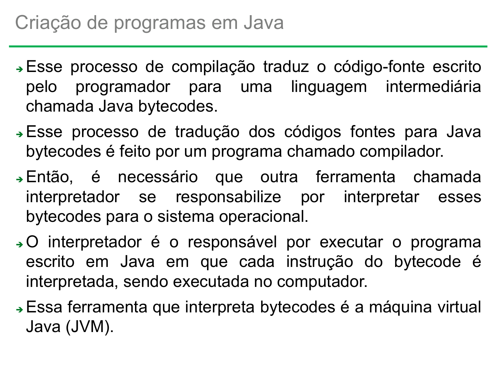
Criação de programas em Java
- Esse processo de compilação traduz o código-fonte escrito pelo programador para uma linguagem intermediária chamada Java bytecodes.
- Esse processo de tradução dos códigos fontes para Java bytecodes é feito por um programa chamado compilador.
- Então, é necessário que outra ferramenta chamada interpretador se responsabilize por interpretar esses bytecodes para o sistema operacional.
- O interpretador é o responsável por executar o programa escrito em Java em que cada instrução do bytecode é interpretada, sendo executada no computador.
- Essa ferramenta que interpreta bytecodes é a máquina virtual Java (JVM).
Página 8
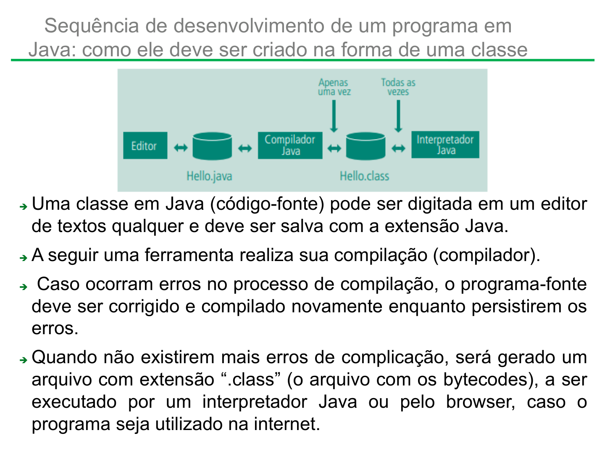
Sequência de desenvolvimento de um programa em Java: como ele deve ser criado na forma de uma classe
- Uma classe em Java (código-fonte) pode ser digitada em um editor de textos qualquer e deve ser salva com a extensão Java.
- A seguir uma ferramenta realiza sua compilação (compilador).
- Caso ocorram erros no processo de compilação, o programa-fonte deve ser corrigido e compilado novamente enquanto persistirem os erros.
- Quando não existirem mais erros de complicação, será gerado um arquivo com extensão “.class” (o arquivo com os bytecodes), a ser executado por um interpretador Java ou pelo browser, caso o programa seja utilizado na internet.
Página 9
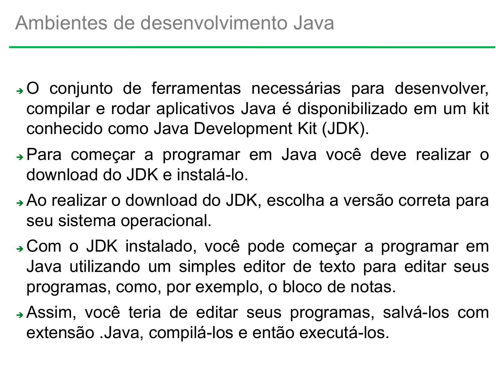
Ambientes de desenvolvimento Java
- O conjunto de ferramentas necessárias para desenvolver, compilar e rodar aplicativos Java é disponibilizado em um kit conhecido como Java Development Kit (JDK).
- Para começar a programar em Java você deve realizar o download do JDK e instalá-lo.
- Ao realizar o download do JDK, escolha a versão correta para seu sistema operacional.
- Com o JDK instalado, você pode começar a programar em Java utilizando um simples editor de texto para editar seus programas, como, por exemplo, o bloco de notas.
- Assim, você teria de editar seus programas, salvá-los com extensão .Java, compilá-los e então executá-los.
Página 10
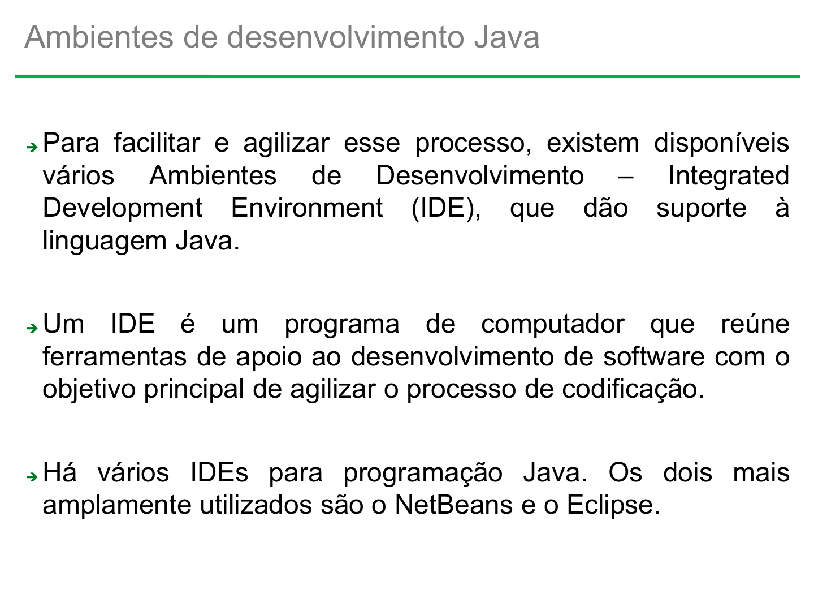
Ambientes de desenvolvimento Java
Para facilitar e agilizar esse processo, existem disponíveis vários Ambientes de Desenvolvimento – Integrated Development Environment (IDE), que dão suporte à linguagem Java.
Um IDE é um programa de computador que reúne ferramentas de apoio ao desenvolvimento de software com o objetivo principal de agilizar o processo de codificação.
Há vários IDEs para programação Java. Os dois mais amplamente utilizados são o NetBeans e o Eclipse.
Página 11
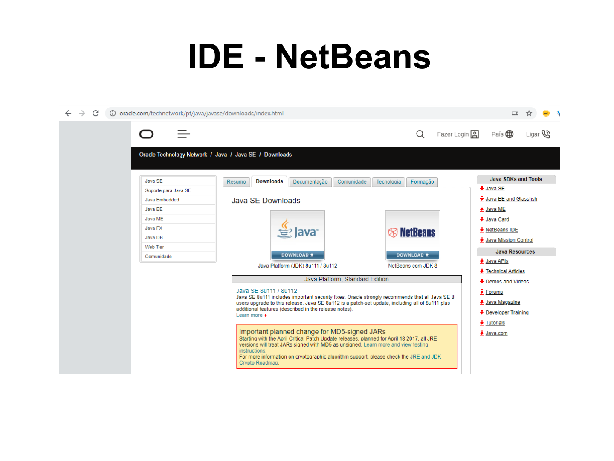
IDE - NetBeans
Página 12
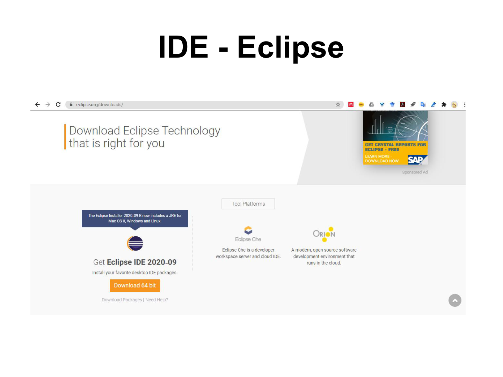
IDE - Eclipse
Página 13
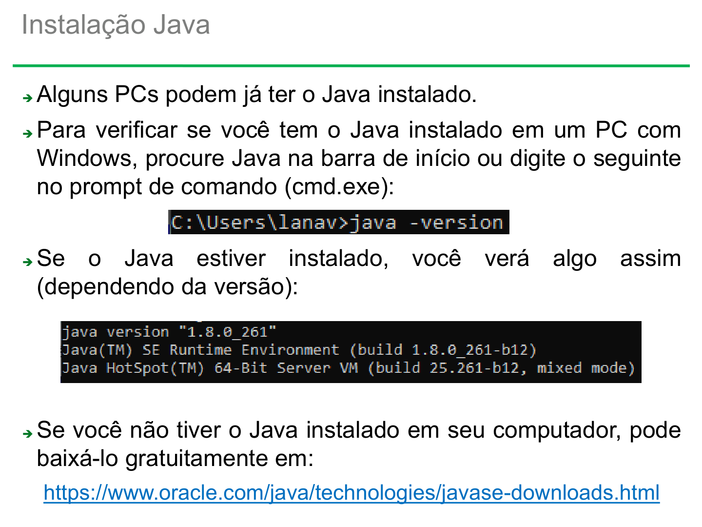
Instalação Java
Alguns PCs podem já ter o Java instalado.
Para verificar se você tem o Java instalado em um PC com Windows, procure Java na barra de início ou digite o seguinte no prompt de comando (cmd.exe):
Se o Java estiver instalado, você verá algo assim (dependendo da versão):
Se você não tiver o Java instalado em seu computador, pode baixá-lo gratuitamente em: https://www.oracle.com/java/technologies/javase-downloads.html
Página 14
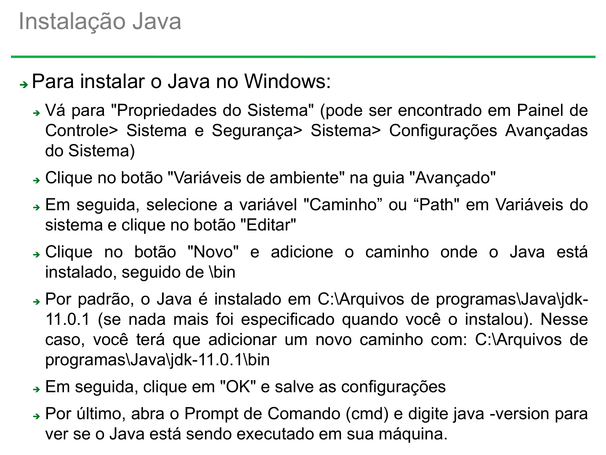
Instalação Java
- Para instalar o Java no Windows:
- Vá para “Propriedades do Sistema” (pode ser encontrado em Painel de Controle> Sistema e Segurança> Sistema> Configurações Avançadas do Sistema)
- Clique no botão “Variáveis de ambiente” na guia “Avançado”
- Em seguida, selecione a variável “Caminho” ou “Path” em Variáveis do sistema e clique no botão “Editar”
- Clique no botão “Novo” e adicione o caminho onde o Java está instalado, seguido de
- Por padrão, o Java é instalado em C:de programas- 11.0.1 (se nada mais foi especificado quando você o instalou). Nesse caso, você terá que adicionar um novo caminho com: C:de programas.1
- Em seguida, clique em “OK” e salve as configurações
- Por último, abra o Prompt de Comando (cmd) e digite java -version para ver se o Java está sendo executado em sua máquina.
Página 15
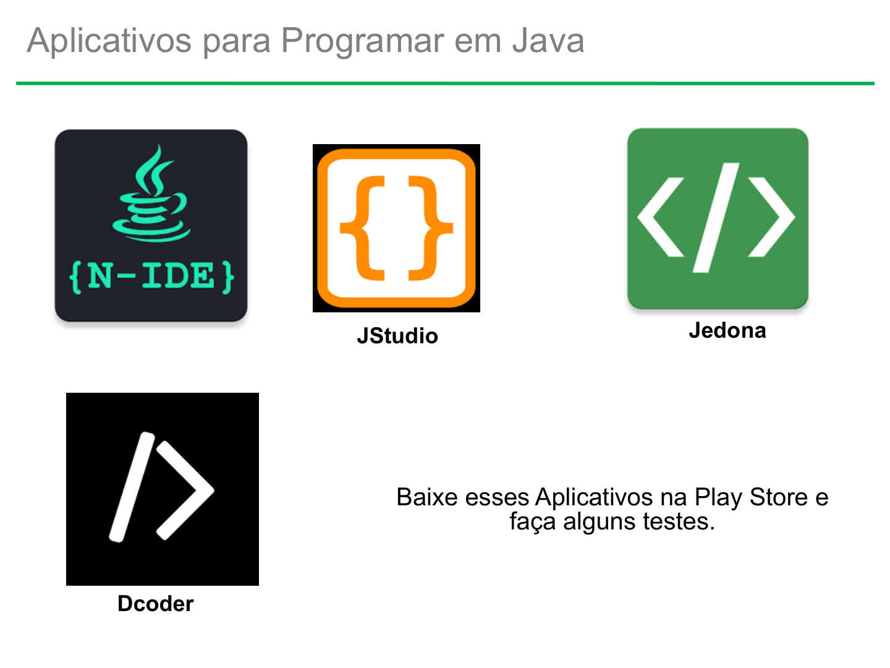
Aplicativos para Programar em Java
Jedona JStudio
Baixe esses Aplicativos na Play Store e
faça alguns testes.
DcoderPágina 16
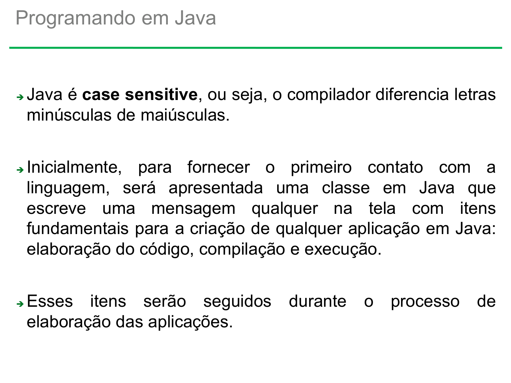
Programando em Java
Java é case sensitive, ou seja, o compilador diferencia letras minúsculas de maiúsculas.
Inicialmente, para fornecer o primeiro contato com a linguagem, será apresentada uma classe em Java que escreve uma mensagem qualquer na tela com itens fundamentais para a criação de qualquer aplicação em Java: elaboração do código, compilação e execução.
Esses itens serão seguidos durante o processo de elaboração das aplicações.
Página 17
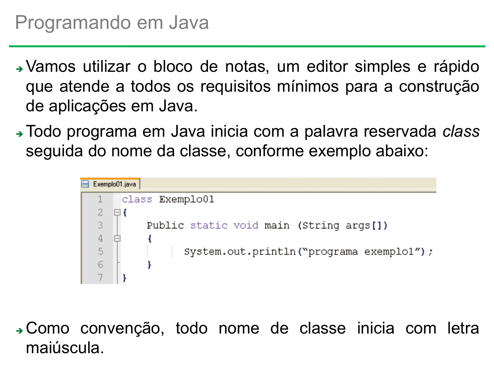
Programando em Java
Vamos utilizar o bloco de notas, um editor simples e rápido que atende a todos os requisitos mínimos para a construção de aplicações em Java.
Todo programa em Java inicia com a palavra reservada class seguida do nome da classe, conforme exemplo abaixo:
Como convenção, todo nome de classe inicia com letra maiúscula.
Página 18
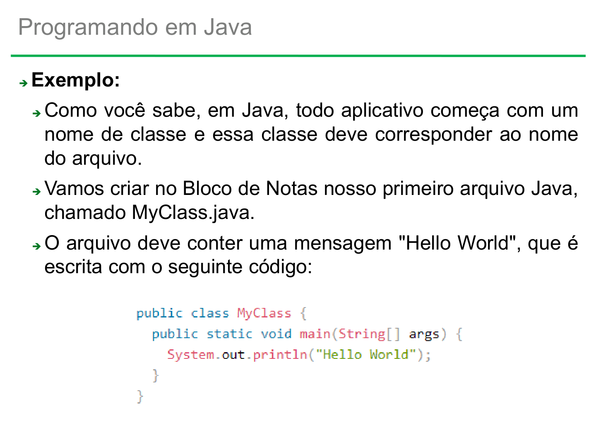
Programando em Java
- Exemplo:
- Como você sabe, em Java, todo aplicativo começa com um nome de classe e essa classe deve corresponder ao nome do arquivo.
- Vamos criar no Bloco de Notas nosso primeiro arquivo Java, chamado MyClass.java.
- O arquivo deve conter uma mensagem “Hello World”, que é escrita com o seguinte código:
Página 19
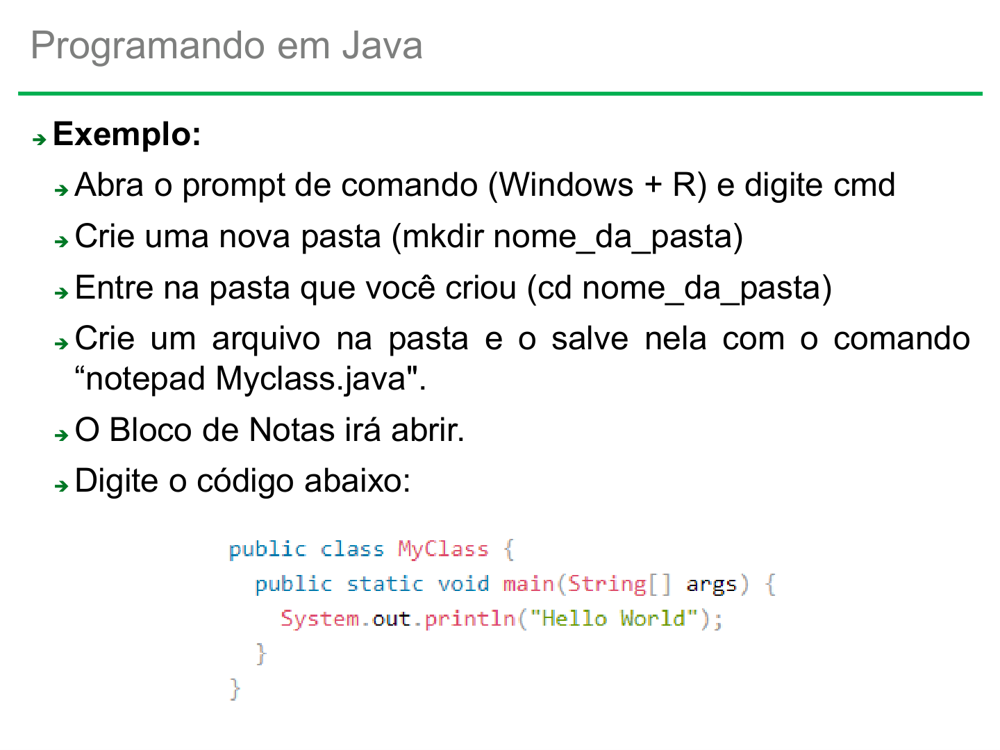
Programando em Java
- Exemplo:
- Abra o prompt de comando (Windows + R) e digite cmd
- Crie uma nova pasta (mkdir nome_da_pasta)
- Entre na pasta que você criou (cd nome_da_pasta)
- Crie um arquivo na pasta e o salve nela com o comando “notepad Myclass.java”.
- O Bloco de Notas irá abrir.
- Digite o código abaixo:
Página 20
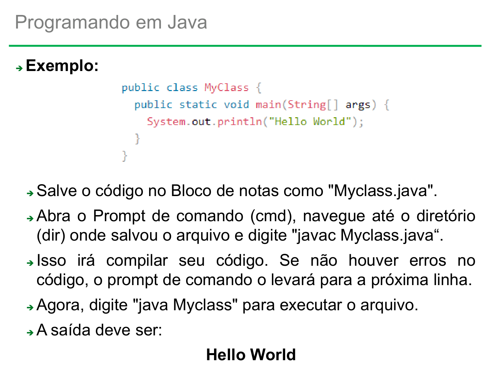
Programando em Java
Exemplo:
Salve o código no Bloco de notas como “Myclass.java”.
Abra o Prompt de comando (cmd), navegue até o diretório (dir) onde salvou o arquivo e digite “javac Myclass.java“.
Isso irá compilar seu código. Se não houver erros no código, o prompt de comando o levará para a próxima linha.
Agora, digite “java Myclass” para executar o arquivo.
A saída deve ser: Hello World
Página 21
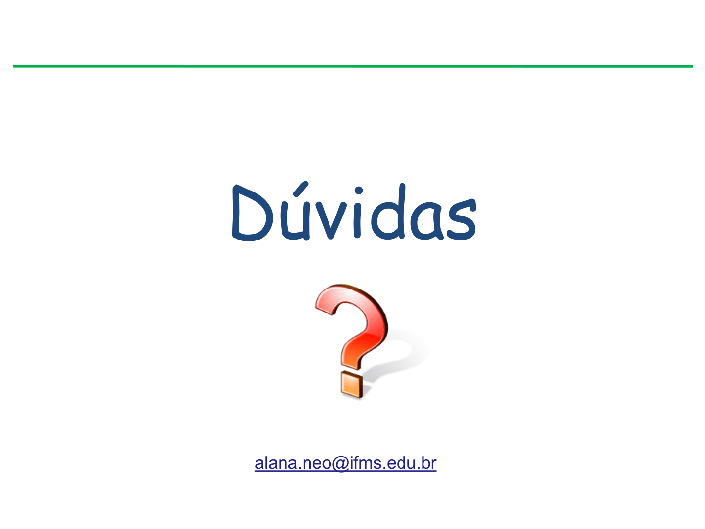
Dúvidas
alana.neo@ifms.edu.br